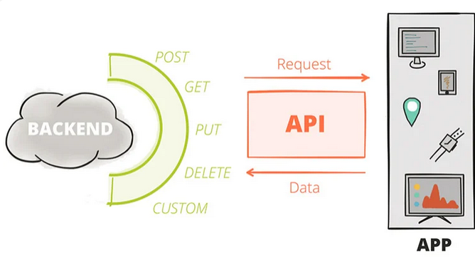
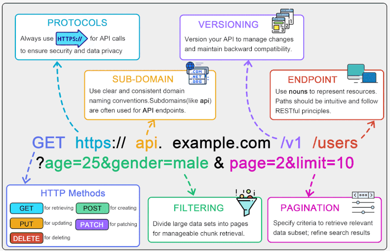
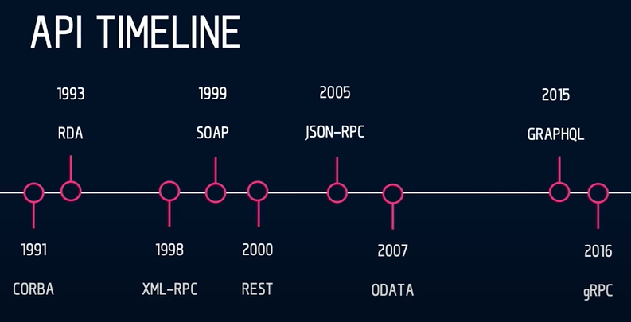
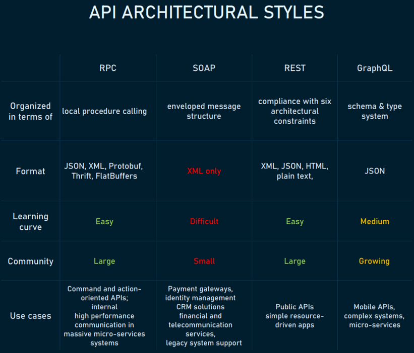
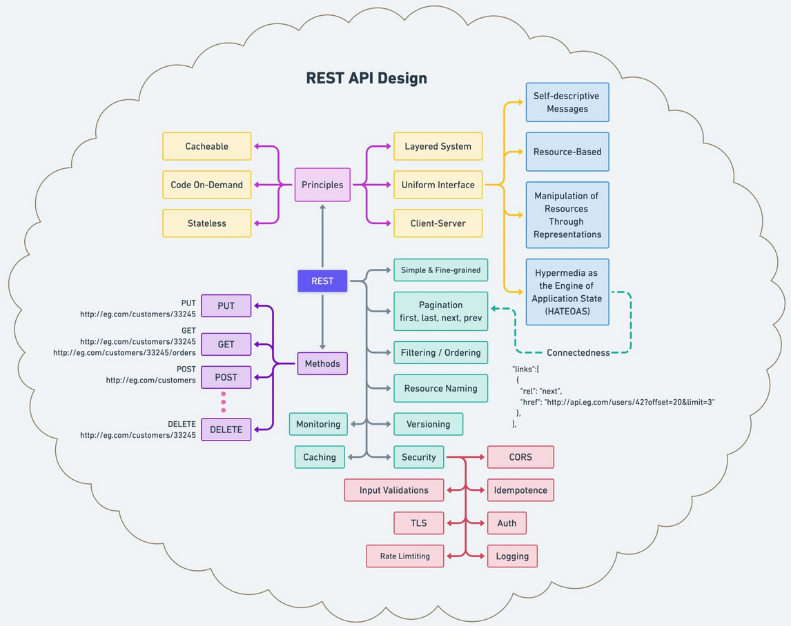
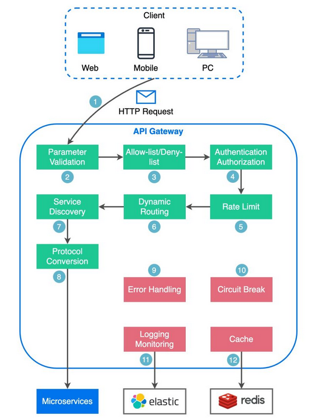
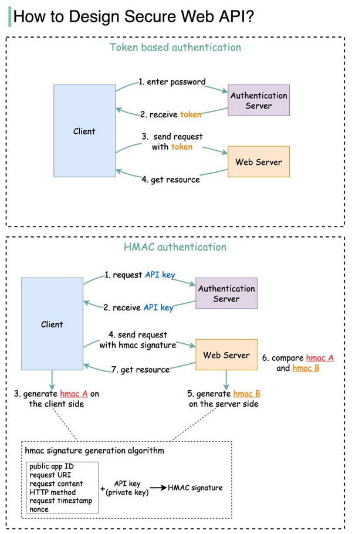

web #software
See also - RPC - gRPC - Authentication mechanisms
Introduction
APIs are mechanisms that enable two software components to communicate with each other using a set of definitions and protocols.

https://www.redhat.com/en/topics/api/what-are-application-programming-interfaces (06/2022)

Main types : SOAP, REST, RPC
Timeline

Comparison

References - SOAP vs REST vs GraphQL vs RPC(altexsoft.com, 05/2020) - SOAP vs REST vs gRPC vs GraphQL(dev.to, 05/2021)
REST / RESTful
REST API: A web-based interface that allows different systems to communicate and exchange data using standardized protocols and HTTP methods.
Representational state transfer (REST) is a style of software architecture.
RESTful is typically used to refer to web services implementing such an architecture.
REST (REpresentational State Transfer) is basically an architectural style of development having some principles:
- It should be stateless
- It should access all the resources from the server using only URI
- It does not have inbuilt encryption
- It does not have session
- It uses one and only one protocol - HTTP
- For performing CRUD operations, it should use HTTP verbs such as get, post, put and delete
- It should return the result only in the form of JSON or XML, atom, OData etc. (lightweight data )
REST based services follow some of the above principles and not all
RESTFUL services means it follows all the above principles.

SOAP
SOAP vs REST (04/2019)
API Gateway

API Security
12 tips
- Use HTTPS
- Use OAuth2
- Use WebAuthn
- Use Leveled API Keys
- Authorization
- Rate Limiting
- API Versioning
- Whitelisting
- Check OWASP API Security Risks
- Use API Gateway
- Error Handling
- Input Validation

(source, 02/2024)
API Clients
- Postman
- Insomnia
- ReadyAPI
- ThunderClient
- Hoppscotch
Postman is a widely used API lifecycle platform. It emerges as a comprehensive and versatile API client suitable for enterprise-level development. Its support for a wide range of protocols, robust feature set, and strong performance make it a top choice for complex projects. With an intuitive design, collaboration features, and a large community, Postman excels in scenarios requiring extensive functionality and community support.
Insomnia is a powerful API client with extensive features and being completely open-source makes it a good choice for developers seeking flexibility and continuous growth. Insomnia is suited for those who value an open-source environment and an active community.
ReadyAPI, with its simplicity and focus on smaller projects, is an ideal choice for scenarios where a lightweight and responsive tool is preferred. It provides essential features, making it suitable for projects with less complexity. However, it may not be the best fit for larger, more intricate endeavors that require extensive functionality.
ThunderClient, a VS Code plugin, is free and user-friendly, catering to developers who prefer an integrated testing environment. However, it lacks extensive features and community support, crucial for larger or complex projects, rendering it more appropriate for smaller teams with simpler requirements. Additionally, its reliance on Visual Studio Code may restrict its appeal to users who prefer alternative development environments. Experienced users accustomed to feature-rich tools may encounter a learning curve and might find ThunderClient lacking in certain functionalities.
Hoppscotch, a free and open-source tool, focuses on functionality over design, offering a lightweight web version with support for various protocols. While it lacks extensive documentation and community support, it provides a cost-effective solution for developers seeking simplicity.
 (Credit ByteByteGo, 2024)
(Credit ByteByteGo, 2024)
Comparing The Best API Clients (06/2023)
For beginners or those who want open source, an easy-to-use interface, Hopscotch is a terrific choice. You can start using it within minutes, right from your browser.
If you want a free tool with limited features that you can use directly within VS Code, ThunderClient is the best choice. However, if you’ve used Postman before and the VS Code extension is a deal-breaker for you, Postman has also announced a VS Code plugin that you can avail of for early access.
If collaboration is quintessential for your team and you prefer a well-organized API testing/development with tons of features, opt for either Postman or Insomnia. Further, you can can choose Insomnia over Postman if you wish to opt for a cheaper tool. However, if the price difference isn’t a factor for you, you can choose Postman over Insomnia for the great community support.